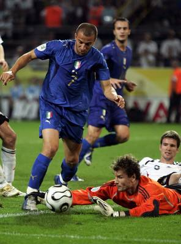

意大利，120分钟后连射两次！
2006/7/5 5:50:47

即使把足球当成消费男人的一种方式，也要毫无选择地消费意大利这样的：120分钟后连射两次的意大利、帅哥云集的意大利、威尔第的意大利、带着金色翅膀飞翔的意大利、划出美丽的蓝色弧线的意大利。
等待点球的德国人只等来了失败的疲软，如那东亚足球小国，裁判护送到四强也就到头了，阿根廷的蓝白，那不彻底的蓝终于化成地中海无边、纯净的蓝，今晚，蓝色终于淹没了白，海洋淹没了天空，如50亿年前，白色被无边的蓝色所包裹。
德国人没有什么可值得遗憾的，两次，球门已经给他们足够的帮助。但这次，球网也需要两次的满足，左右两道最美的蓝色弧线，德国被美丽所击落，德国人完成了一次出色的配角，意大利才是今夜星空下真正的主人。今晚，只属于蓝色！那比1982年更有力、纯净的蓝！
德国人，如果一定要责骂，就去责骂那只乌鸦吧：“贝利专栏：相信德国葡萄牙”，但今晚，你们并不是仅仅死在那神奇的乌鸦上，120分钟后连射两次的神奇并不仅仅靠嘴就可以完成！死在比神奇的乌鸦更神奇的蓝下，是你们的荣耀！
德国人，2002年，你们已经得到你们本不应该得到的。而意大利、法国、葡萄牙，都不过在补偿四年前的一切。不管神奇的乌鸦能否让葡萄成为葡萄皮，已经欧洲杯的世界杯，也已南欧杯了！为了那地中海的蓝，为了南欧蓝色的风，世界因此而美丽着。